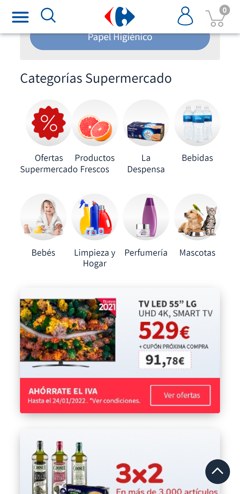
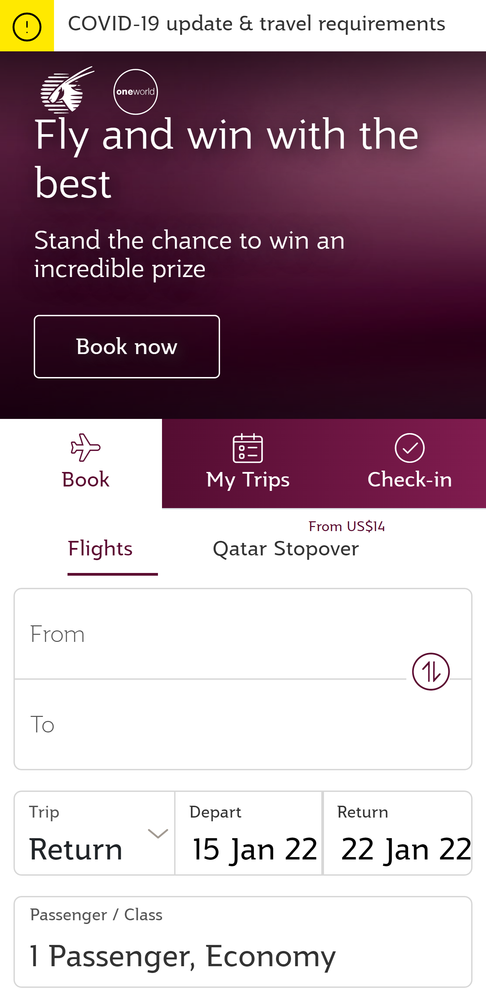

PARC: Proximity
Carrefour
Upon entering this page I can see how important it is to apply this principle, everything that Carrefour offers is grouped in some way and is related, I can easily locate myself in the store and I can easily find what I want.
White Space & Clean Design
Qatar Airways
I love this page of Qatar airways, it has a lot of content, and offers, etc, the white spaces give it the order it needs to make it an attractive page and anyone who enters can find what they want and have a very good experience
PARC: Contrast
Harvard
The colors white, red, black in the footer, I love that combination, and a background image for one of the sections, it allows you to read easily and draws attention when you want us to be able to access any of the options that it shows